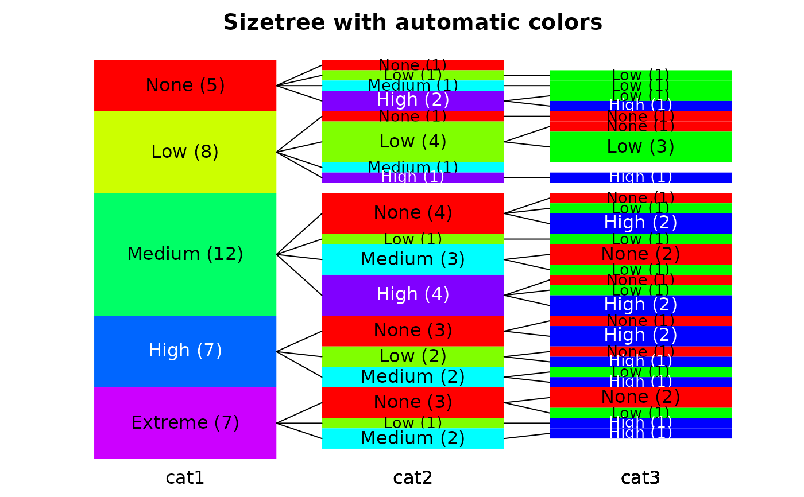
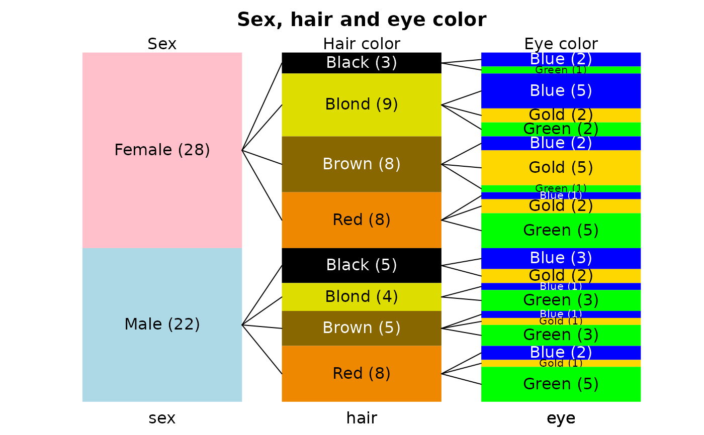
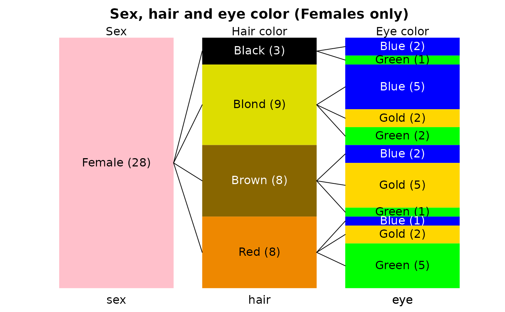
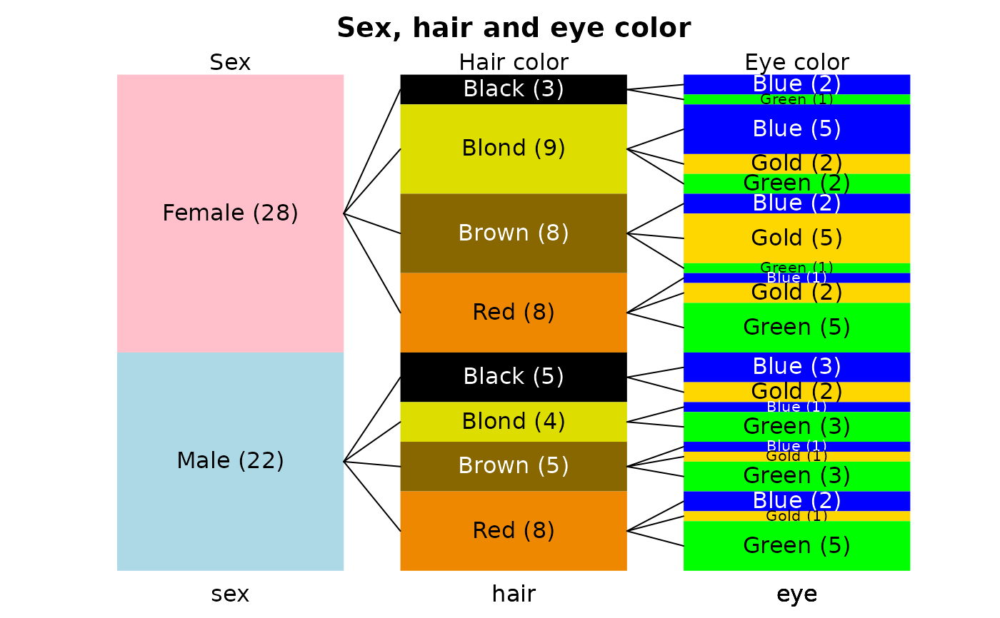
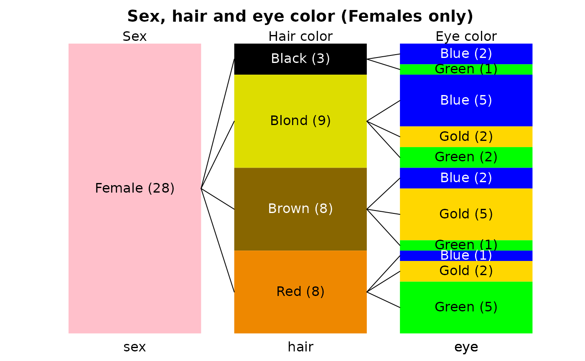

Display a hierarchical breakdown of disjunct categories
sizetree.RdDisplay a data frame in which the values in each successive column represent subcategories of the previous column as stacked rectangles.
Usage
sizetree(x,left=0,top,right=1,lastcenter=NA,showval=TRUE,showcount=TRUE,
stacklabels=TRUE,firstcall=TRUE,col=NULL,border=NA,toplab=NULL,base.cex=1,
...)Arguments
- x
A data frame in which each successive column represents subcategories of the previous column.
- left
The left edge of the current stack of rectangles in user units.
- top
The top of the current stack of rectangles in user units.
- right
The right edge of the current stack of rectangles in user units.
- lastcenter
The center of the previous rectangle from which the next breakdown of categories arises. There is almost no reason to change it.
- showval
Whether to display the values representing the categories.
- showcount
Whether to display the count for the categories.
- stacklabels
Whether to display the names of the dataframe beneath the stacked rectangles.
- firstcall
A flag for the function - do not alter this.
- col
Optional fill colors for the rectangles. See Details
- border
Color for border around the rectangles. See details
- toplab
Optional labels to display a the top of each stack.
- base.cex
The base character expansion for the labels.
- ...
additional arguments passed to plot.
Details
sizetree displays disjunct hierarchical categories as stacked rectangles. It accepts a data frame in which the values in the first column represent categories, the values in the second column represent subcategories of the first column, and so on. The first column will be displayed as a stack of rectangles, the height of each proportional to the count for each category. Each substack of rectangles in the second stack will represent the breakdown of counts for its superordinate category and so on through the columns. Empty categories are ignored and NAs will produce gaps, which will propagate across subsequent stacks.
The user can simply pass the data frame, which should only contain columns that are hierarchical categories (example 1). The colors will probably not be ideal. The user can pass the same colors for the all levels (example 2). If this is done, sizetree will try to match colors to categories when the number of categories is diminishing (e.g. some levels are missing in the sub-categories) and the columns of x are factors with the same levels in the same order. This will work if the category labels are the same in each level, but remember to add the names to the colors before passing them to the function. This will not work if there are more categories in the lower levels. If col is a list, this is not done, and the user will have to work out the correct colors for each level. This is particularly important when the category labels and the number of categories is different in different levels (example 3).
In some sizetrees, the subcategory counts are very low compared to the overall number of data objects. This results in rectangles that are very thin vertically. One way to get better legibility of the labels is to use dark colors for the rectangles, so that the labels are white, and no borders (set border to NA). The user can also select only part of the data frame x to expand sections of the sizetree as in the last example.
The labels are sized to fit the vertical extent of the bars. However, it is possible that the labels may extend horizontally beyond the bar(s). The base.cex argument can be used to shrink the labels if this happens. Remember that base.cex will shrink all the labels, not just the ones that are too wide.
The firstcall argument is necessary for the function to initialize the plot, as each breakdown involves a recursive call. If it is changed, the best that can be expected is an uninformative plot.
Examples
cat1<-factor(sample(c("None","Low","Medium","High","Extreme"),40,TRUE),
levels=c("None","Low","Medium","High","Extreme"))
cat2<-factor(sample(c("None","Low","Medium","High"),40,TRUE),
levels=c("None","Low","Medium","High"))
cat3<-factor(sample(c("None","Low","High"),40,TRUE),
levels=c("None","Low","High"))
hcats<-data.frame(cat1,cat2,cat3)
# throw in a few NAs
hcats$cat1[10]<-NA
hcats$cat2[c(15,20)]<-NA
hcats$cat3[c(11,14,25)]<-NA
# first let sizetree work out the colors
sizetree(hcats,main="Sizetree with automatic colors")
#> 1 NA values dropped from first stack.

# now see what happens with a list of the same colors for each level
bhcol<-c("#ff8080","#dddd80","#80ff80","#0000ff","#80dddd")
sizetree(hcats,col=list(bhcol,bhcol,bhcol),
main="Sizetree with the same colors each level")
#> 1 NA values dropped from first stack.
 # finally, specify different colors for categories with different labels
sexhaireye<-data.frame(sex=factor(sample(c("Male","Female"),50,TRUE)),
hair=factor(sample(c("Blond","Red","Brown","Black"),50,TRUE)),
eye=factor(sample(c("Gold","Green","Blue"),50,TRUE)))
shecol<-list(c("pink","lightblue"),c("#000000","#dddd00","#886600","#ee8800"),
c("blue","gold","green"))
sizetree(sexhaireye,main="Sex, hair and eye color",
col=shecol,toplab=c("Sex","Hair color","Eye color"))

# now expand the female part of the sizetree
sizetree(sexhaireye[sexhaireye[,1]=="Female",],
main="Sex, hair and eye color (Females only)",
col=shecol,toplab=c("Sex","Hair color","Eye color"))

# finally, specify different colors for categories with different labels
sexhaireye<-data.frame(sex=factor(sample(c("Male","Female"),50,TRUE)),
hair=factor(sample(c("Blond","Red","Brown","Black"),50,TRUE)),
eye=factor(sample(c("Gold","Green","Blue"),50,TRUE)))
shecol<-list(c("pink","lightblue"),c("#000000","#dddd00","#886600","#ee8800"),
c("blue","gold","green"))
sizetree(sexhaireye,main="Sex, hair and eye color",
col=shecol,toplab=c("Sex","Hair color","Eye color"))

# now expand the female part of the sizetree
sizetree(sexhaireye[sexhaireye[,1]=="Female",],
main="Sex, hair and eye color (Females only)",
col=shecol,toplab=c("Sex","Hair color","Eye color"))
